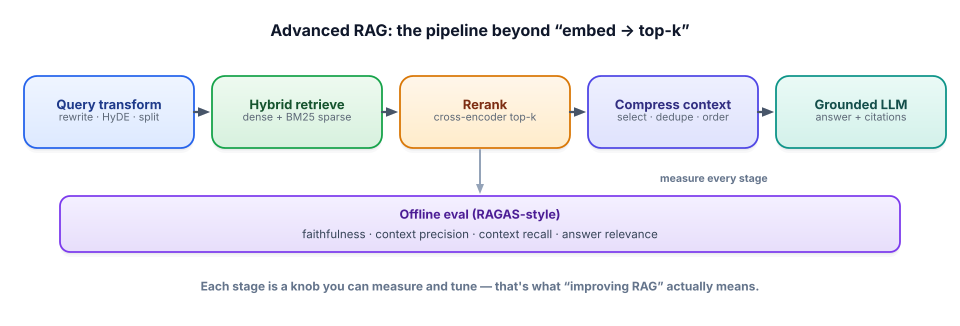

Advanced RAG
Track 3 got you a working, grounded RAG system. This lesson covers what you reach for when “embed and take the top k” isn’t good enough — query transformation, reranking, context curation, and the rigorous evaluation that tells you which change actually helped.
Why basic RAG plateaus
A first RAG build usually works on easy questions and then stalls on real ones. The reasons are predictable: the user’s question is phrased differently from the documents (so embedding similarity misses), the right chunk is retrieved but buried among weak ones (so the model overlooks it), or several relevant chunks are needed and the top k grabs only one. Advanced RAG is a set of targeted fixes for these specific failures — and crucially, a way to measure whether each fix worked. Every technique below is a knob; the eval is how you know which knob to turn.

1 · Fix the query before you search
Retrieval quality is capped by the query you embed. Query transformation improves the question before it ever hits the index:
Rewriting turns a messy or conversational question into a clean search query (“why’s it broken since the update?” → “errors after version 2.0 upgrade”). Multi-query generates several phrasings, retrieves for each, and merges the results — catching documents that only match one wording. Decomposition splits a multi-part question (“compare the refund and warranty policies”) into sub-questions retrieved separately. HyDE (Hypothetical Document Embeddings) asks the model to draft a fake ideal answer, then embeds that to search — because a hypothetical answer often sits closer in embedding space to the real documents than the short question does.
Here’s multi-query with simple rank fusion, on the free local stack:
# Ask the LLM for 3 rephrasings, retrieve each, then fuse with Reciprocal Rank Fusion.
variants = generate_rephrasings(question, n=3) # an Ollama call returning a list[str]
scores = {}
for q in [question] + variants:
for rank, chunk_id in enumerate(retrieve(q, k=10)):
scores[chunk_id] = scores.get(chunk_id, 0) + 1 / (60 + rank) # RRF
top = sorted(scores, key=scores.get, reverse=True)[:5]Reciprocal Rank Fusion rewards chunks that rank highly across several queries, which is exactly the signal you want. The cost is extra LLM and retrieval calls — a real latency/quality trade-off you should measure, not assume.
2 · Retrieve broadly, then rerank precisely
Your vector search uses a bi-encoder: it embeds the query and each document separately, which is fast (you precompute document vectors) but approximate. A cross-encoder reranker reads the query and a candidate document together and scores their relevance directly — far more accurate, but far too slow to run over a whole corpus. The standard pattern resolves the tension: retrieve a generous top k (say 25) cheaply with the bi-encoder, then rerank just those 25 with the cross-encoder and keep the best 5. You get cross-encoder accuracy at bi-encoder scale.
Rerankers don’t require a paid API. A small open cross-encoder (e.g. cross-encoder/ms-marco-MiniLM via sentence-transformers) runs on CPU and meaningfully lifts precision. Add it, then check the eval — sometimes a reranker helps more than a fancier embedding model, for less effort.
3 · Curate the context window
More retrieved text is not better. Two effects bite: models exhibit “lost in the middle” — they attend best to the start and end of the context and can miss facts buried in the middle — and irrelevant chunks actively distract, lowering faithfulness. So order matters (put the strongest chunks first and last), deduplicate near-identical passages, and consider compression: trim each chunk to the sentences that actually bear on the question (an extractive step, or a cheap LLM pass) before handing it to the generator. Less, but better, context usually beats stuffing the window — and it’s cheaper.
4 · Measure it like an engineer
You can’t improve what you don’t measure, and RAG has two failure surfaces that need separate metrics. Retrieval quality: context recall (did we fetch the chunks that contain the answer?) and context precision (how much of what we fetched was relevant?). Generation quality: faithfulness (is every claim supported by the retrieved context, i.e. no hallucination?) and answer relevance (did it actually address the question?). This four-metric view (popularized by RAGAS) is powerful because it localizes the problem: low recall means fix retrieval; high recall but low faithfulness means fix generation/grounding. Build this on the golden-set + LLM-judge foundation from Track 6 — it works with free local models.
- Advanced RAG = targeted fixes for specific failures, each measured, not guessed.
- Query transformation (rewrite, multi-query, decomposition, HyDE) improves the question before retrieval.
- Retrieve broadly (bi-encoder) then rerank (cross-encoder) for accuracy at scale — free/local rerankers work well.
- Curate context: order strongest first/last (“lost in the middle”), dedupe, and compress — less but better.
- Measure four things — context recall, context precision, faithfulness, answer relevance — to localize the fix.
Your RAG system scores high context recall (0.9) but low faithfulness (0.6) — it fetches the right documents, yet the answers contain unsupported claims. Diagnose where the problem is and list three changes you’d try first.
▸ Show solution & reasoning
Diagnosis: retrieval is fine — high recall means the answer-bearing chunks are present. The failure is in generation/grounding: the model has the right context but isn’t staying anchored to it. Throwing a better embedding model or more retrieval at this would waste effort, because the metric tells you the problem is downstream.
Three first fixes: (1) tighten the grounding prompt — instruct “answer using ONLY the context; if it’s not there, say you don’t know,” which directly attacks unsupported claims. (2) Require citations per claim and (optionally) verify each sentence maps to a chunk — citation pressure reduces fabrication. (3) Curate the context — remove distracting/duplicate chunks and reorder so the strongest are first/last, reducing “lost in the middle” drift. A fourth, if needed: lower temperature for the generation step. Then re-run faithfulness to confirm it moved.
Why this is the senior move: you used the metrics to localize the fault before touching anything, then applied the cheapest targeted fixes and re-measured. That diagnose-then-treat loop — not a pile of simultaneous changes — is exactly what interviewers and teammates want to see.
Why is the standard pattern “retrieve top-25 with the embedding model, then rerank to top-5 with a cross-encoder,” rather than cross-encoding the whole corpus?
At small scale you can compare a query against every vector (exact search). At millions of documents that’s too slow, so production systems use an approximate nearest neighbor (ANN) index — most commonly HNSW, a navigable graph that finds very-close vectors in roughly logarithmic time. The trade is a tunable sliver of recall for an enormous speedup; parameters like HNSW’s ef_search let you dial the accuracy/latency balance, and — being a measurable knob — you set it by watching recall, not by guessing. This is where your data-engineering instincts pay off directly: it’s an index-tuning problem like any other.
Three more production realities round it out. Metadata filtering (by tenant, date, permissions) must combine with vector search, which shapes your index and store choice — and pre- vs post-filtering has real recall implications. Freshness means incremental indexing and re-embedding as documents change, plus handling deletes and duplicates, exactly the pipeline hygiene you already do for warehouses. And cost compounds: embedding millions of chunks, storing vectors, and re-embedding on model upgrades are budget items you plan for. None of this is exotic — it’s data engineering applied to vectors, which is precisely why your background is an advantage here.
RAG can be tuned and measured to a high bar. Next, the same rigor applied to systems that take actions: advanced agents.